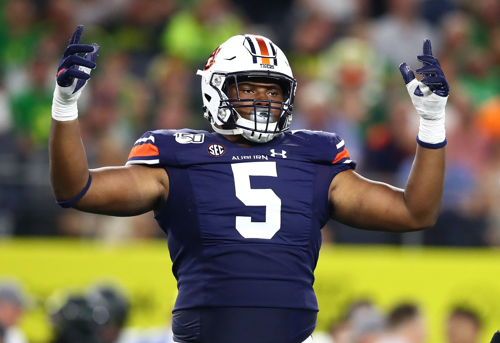
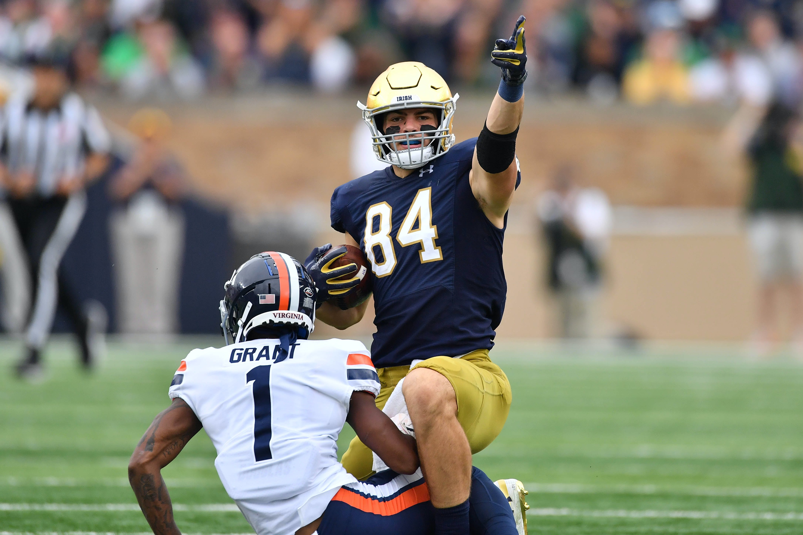
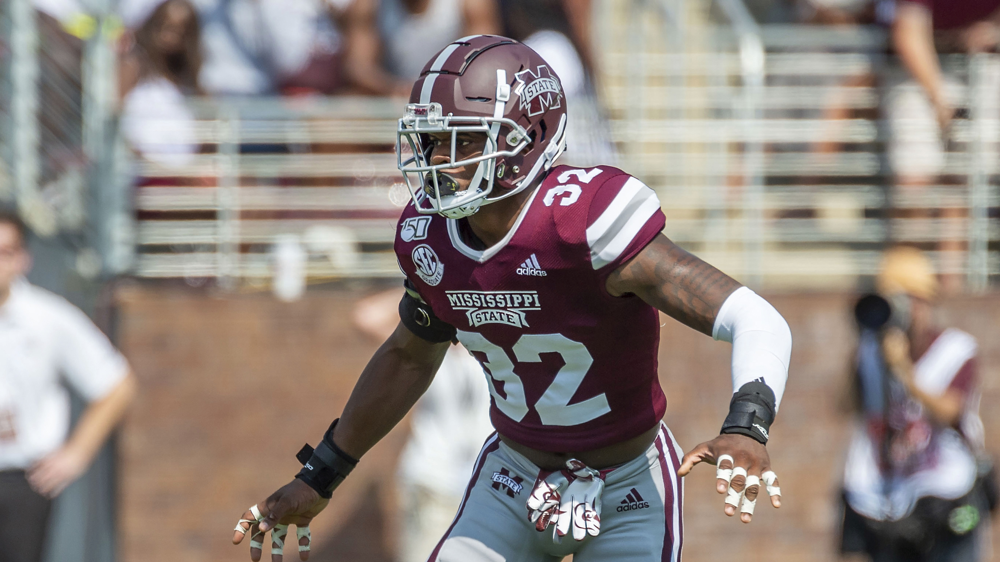
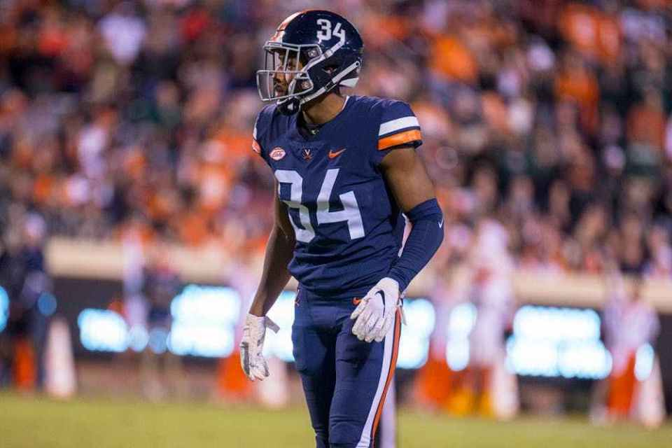
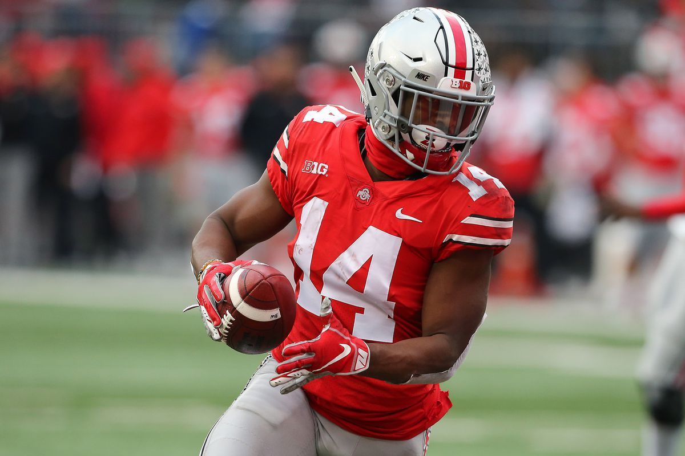
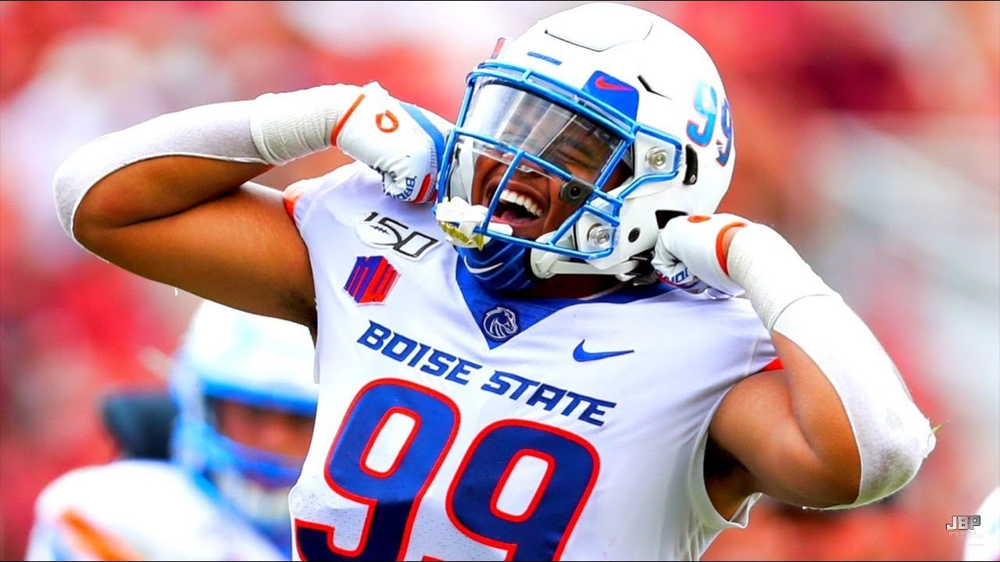
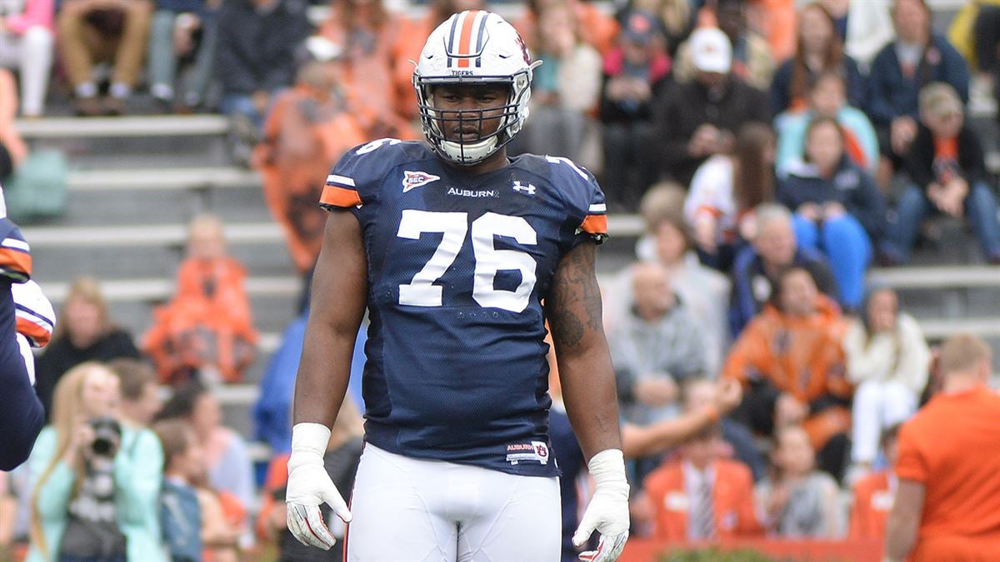
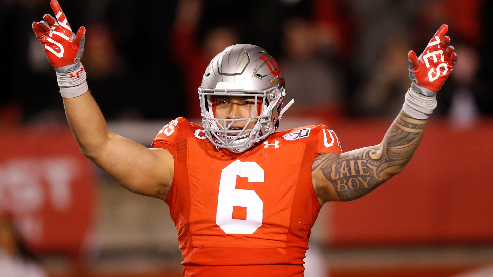

Colten Cowell
Colten Cowell
5/23/2020
Top Five Schools With The Most Picks in 2020 NFL Draft
The 2020 NFL Draft is in the books and several players saw their names called during this special
3 day event. Players were filled with emotion when they hear their phone ring and hear a voice on the other end of the line says
"We would like you to be a part of our organization." More importantly not only are the players happy to be selected, but their
respective universitys and college coaches are just as excited. Hearing more and more players being drafted from a particular school can
do wonders for a team's image, recruiting, and reputation. Last but not least it also gives rival schools bragging rights about who
put more players into the NFL.
You can find the list of top schools that had the most number of players drafted in this year's draft and see if your favorite school
made the cut.
- (6) Auburn Tigers & Notre Dame Fighting Irish  
- S Brian Cole II, Mississippi State 
- DE Kenny Willekes, Michigan State
- CB Bryce Hall, Virginia 
- WR K.J. Hill, Ohio State 
- DE Curtis Weaver, Boise State 
- OT Prince Tega Wanogho, Auburn 
- DE Bradlee Anae, Utah 
- OG Netane Muti, Fresno State
Auburn Tigers: 6 picks Round Taken: Round 4 Round Taken: Round 7 Round Taken: Round 7 Round Taken: Round 5 Round Taken: Round 7 Round Taken: Round 5 Round Taken: Round 6 Round Taken: Round 5 Round Taken: Round 6
DT Derrick Brown
(7) - Carolina Panthers
CB Noah Igbinoghene
(30) - Miami Dolphins
DT Marlon Davidson
(47) - Atlanta Falcons
S Daniel Thomas
(157) - Jacksonville Jaguars
Team Drafted By: Dallas Cowboys
Actual: 146
Projected: 69.3
Difference: 76.7
Team Drafted By: Minnesota Vikings
Actual: 249
Projected: 171.5
Difference: 77.5
Team Drafted By: Minnesota Vikings
Actual: 225
Projected: 144.8
Difference: 80.2
Team Draftd By: New York Jets
Actual: 159
Projected: 73.5
Difference: 85.5
Team Drafted By: Los Angeles Chargers
Actual: 220
Projected: 122.9
Difference: 97.1
Team Drafted By: Miami Dolphins
Actual: 165
Projected: 64.6
Difference: 100.4
Team Drafted By: Philadelphia Eagles
Actual: 210
Projected: 103.5
Difference: 106.5
Team Drafted By: Dallas Cowboys
Actual: 180
Projected: 72.4
Difference: 107.6
Team Drafted By: Denver Broncos
Actual: 181
Projected: 67.4
Difference: 113.6